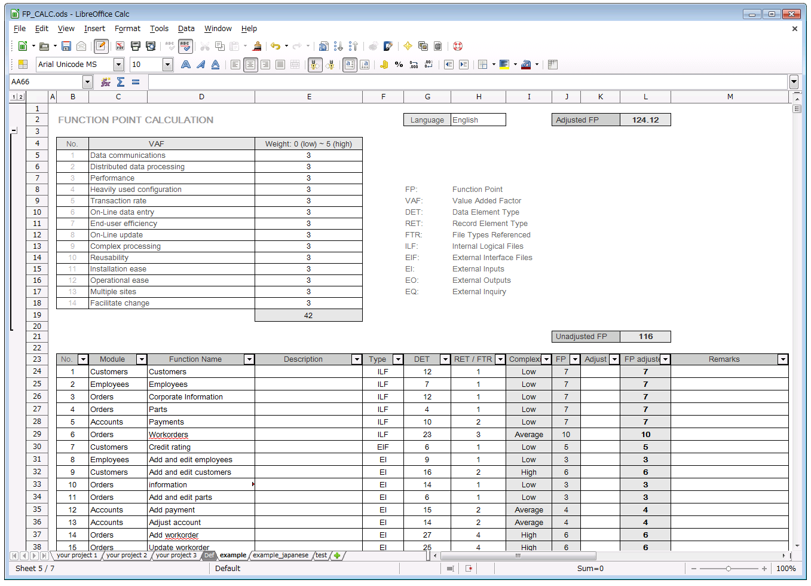

Function-Point-Spreadsheet for sizing your software development
What is Function Point or Function Point Analysis ?
- International Function Point Users Group: http://www.ifpug.org/?page_id=10
- http://www.softwaremetrics.com/fpafund.htm
- Youtube tutorials: http://www.youtube.com/watch?v=X0WLX8iAFb0
Highlight:
- No macro.
- Support localizations (currently english, japanese and simplified chinese).
- Both LibreOffice Calc (*.ods) and MS Excel (*.xlsx) format
Example 
Japanese example / 日本語もオッケーですよ:

Idea of this tool came from some good pioneers below: